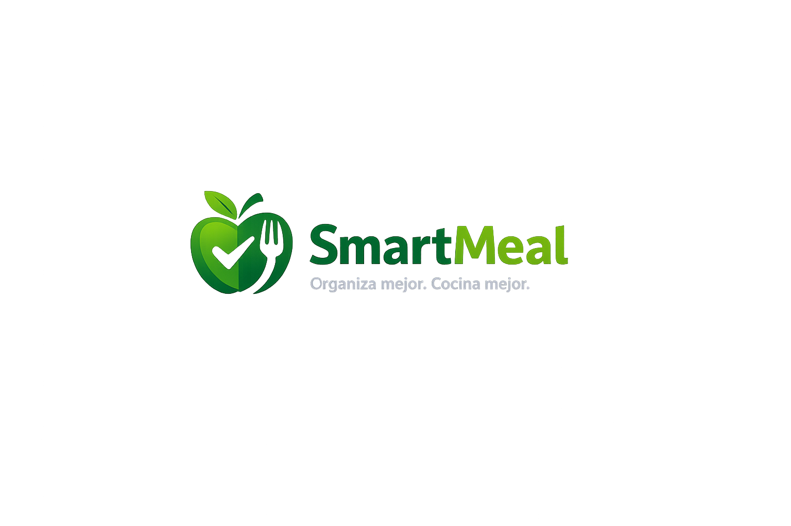

Mis alimentos
Registrá los ingredientes disponibles en tu hogar y organizalos por categorías.
Ver alimentosSmartMeal te ayuda a organizar los alimentos que tenés en casa, encontrar recetas y planificar tus comidas durante toda la semana.
Prototipo académico de SmartMeal.

SmartMeal reúne las funciones principales que necesitás para aprovechar mejor tus alimentos y organizar tu semana.
Registrá los ingredientes disponibles en tu hogar y organizalos por categorías.
Ver alimentosDescubrí ideas para cocinar utilizando alimentos que ya tenés disponibles.
Ver recetasPlanificá desayunos, almuerzos y cenas para mejorar tu organización diaria.
Ver planesAgregá los productos que tenés en tu casa, como frutas, verduras, carnes o lácteos.
Explorá recetas simples y elegí una opción según tus ingredientes disponibles.
Organizá tus comidas para ahorrar tiempo, evitar desperdicios y comer mejor.
Conocé recetas, organizá tus alimentos y creá un plan semanal adaptado a tu rutina.